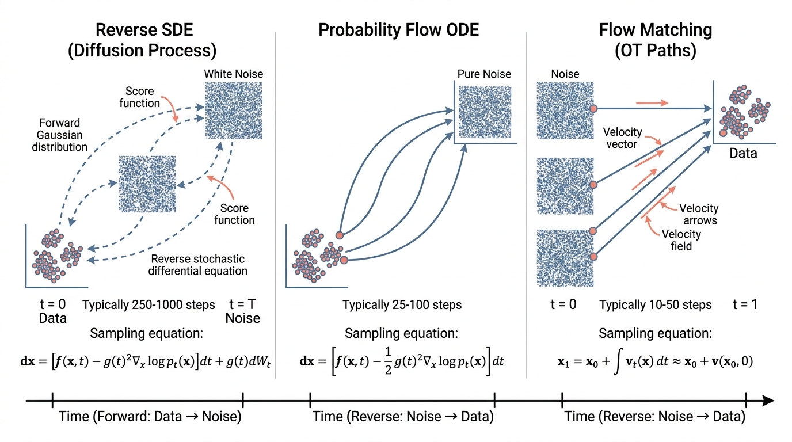

Prerequisites
This section builds directly on the generative modeling foundations from Section 34.1. You should understand the evidence lower bound (ELBO), the reparameterization trick, and why diffusion models superseded earlier architectures. Comfort with stochastic processes and ordinary differential equations (ODEs) from Appendix A will help with the continuous-time formulation, but the derivations below proceed from first principles. The connection to neural ODEs from Chapter 33: Scientific Machine Learning provides useful context for the flow matching material.
Diffusion models work by learning to reverse a noise-corruption process. The forward process gradually destroys data by adding Gaussian noise over many steps until the data becomes indistinguishable from pure noise. The reverse process, parameterized by a neural network, learns to undo this corruption one step at a time, transforming noise back into data. The mathematical key is the score function: the gradient of the log-density, \(\nabla_x \log p(x)\). If you know the score at every noise level, you can reverse the diffusion process exactly. This section derives the score function, shows how to estimate it via denoising score matching, builds the complete Denoising Diffusion Probabilistic Model (DDPM) framework, and then introduces flow matching as a simpler, faster alternative that achieves comparable results. By the end, you will have implemented both a diffusion model and a flow matching model in PyTorch, and understand the EDM preconditioning framework that unifies them.
1. The Score Function
Every image synthesized by Stable Diffusion, every protein backbone proposed by RFDiffusion, and every MRI scan reconstructed from undersampled measurements relies on a single mathematical object: the score function. Without it, these systems would have no way to navigate the space of possible outputs toward realistic ones.
Suppose you need to sample from a probability distribution so complex that computing the probability of even a single point is intractable, yet at every point you can compute which direction probability increases fastest. That directional signal alone turns out to be enough to generate perfect samples, and it is called the score function: the gradient of the log-density with respect to the data.
For a probability distribution \(p(x)\) over \(\mathbb{R}^d\), the score function is defined as:
$$s(x) = \nabla_x \log p(x)$$The score function is a vector field over the entire data space. At every point \(x\), it returns a vector pointing toward steepest probability increase, with magnitude proportional to the slope. This matters because the score encodes a distribution's shape without requiring the normalizing constant (the denominator in Bayes' rule), which is typically intractable for high-dimensional data. Taking the gradient of \(\log p(x)\) cancels the normalizing constant entirely, since \(\nabla_x \log \frac{\tilde{p}(x)}{Z} = \nabla_x \log \tilde{p}(x)\), leaving only the unnormalized density. Use score-based methods over VAEs or normalizing flows when you need high-fidelity generation and can afford iterative sampling. Prefer VAEs when single-pass speed is critical or when downstream tasks require an explicit latent space. Figure 34.2.1 illustrates the forward and reverse diffusion process alongside the probability flow ODE and flow matching comparison.

The score has a beautiful geometric interpretation: at any point \(x\), it points in the direction of steepest increase of the log-density. Following the score via Langevin dynamics (an iterative sampling algorithm that generates samples from a distribution by taking small steps along the score direction plus random noise, named after the physicist Paul Langevin) produces samples from \(p(x)\):
$$x_{t+1} = x_t + \frac{\eta}{2} \nabla_x \log p(x_t) + \sqrt{\eta} \, \epsilon_t, \quad \epsilon_t \sim \mathcal{N}(0, I)$$where \(\eta\) is a step size. As \(\eta \to 0\) and the number of steps grows, the iterates converge in distribution to samples from \(p(x)\). The noise term \(\sqrt{\eta} \, \epsilon_t\) is essential: without it, the dynamics would converge to a mode of \(p(x)\) rather than sampling from it. This connection between score estimation and sampling is why score-based models work.
Mental Model
Think of the score function as a topographic map of a mountain range, where elevation represents probability density. At every location on the map, the score is an arrow pointing uphill along the steepest slope. Langevin sampling is like dropping a ball onto the landscape with random wind gusts: the ball rolls uphill toward peaks (following the score) while the wind (the noise term) keeps it from getting stuck on any single summit. Over time, the ball visits different peaks in proportion to their height. The critical insight is that you never need to know the actual elevation (the probability value) at any point; you only need the slope arrows (the score). Two maps with different sea-level baselines (different normalizing constants) produce identical slope arrows, which is why the score sidesteps the intractable normalization problem.
The challenge is estimating \(\nabla_x \log p(x)\) without knowing \(p(x)\). Directly regressing a neural network \(s_\theta(x) \approx \nabla_x \log p(x)\) requires the unknown true score as a target. The breakthrough of denoising score matching (Vincent, 2011) sidesteps this: instead of matching the score of the clean data distribution, match the score of a noise-corrupted version, which has a known closed-form solution.
Given a noisy observation \(\tilde{x} = x + \sigma \epsilon\) where \(\epsilon \sim \mathcal{N}(0, I)\), the score of the noisy distribution \(p_\sigma(\tilde{x})\) at point \(\tilde{x}\) is: \(\nabla_{\tilde{x}} \log p_\sigma(\tilde{x}) = -\frac{\epsilon}{\sigma}\). Training a network to predict this score is equivalent to training it to predict the noise \(\epsilon\) that was added. This is why the DDPM loss is a simple noise prediction mean squared error (MSE): the network learns \(\epsilon_\theta(\tilde{x}, \sigma) \approx \epsilon\), and the score is recovered as \(s_\theta(\tilde{x}, \sigma) = -\epsilon_\theta(\tilde{x}, \sigma) / \sigma\). Score estimation reduces to denoising.
Exercise 34.2.1
Suppose you have a 1D distribution \(p(x) \propto e^{-x^4}\). Compute the score function \(s(x) = \nabla_x \log p(x)\) analytically. Then, starting from \(x_0 = 3.0\), run five steps of Langevin dynamics with step size \(\eta = 0.1\) (use a fixed seed so the noise \(\epsilon_t\) is reproducible). After five steps, is \(x\) closer to the mode of \(p(x)\) than where it started? Why does the noise term prevent the iterate from converging to exactly \(x = 0\)?
Hint
The log-density is \(\log p(x) = -x^4 + \text{const}\), so the score is \(s(x) = -4x^3\). Plug this into the Langevin update: \(x_{t+1} = x_t + \frac{\eta}{2}(-4x_t^3) + \sqrt{\eta}\,\epsilon_t\). The noise term adds a random perturbation at each step proportional to \(\sqrt{\eta}\), which prevents the iterates from settling at the mode and instead causes them to fluctuate around it, sampling from the distribution rather than optimizing toward its peak.
2. The DDPM Framework
Denoising Diffusion Probabilistic Models (Ho et al., 2020) define a forward process that progressively adds noise to data over \(T\) timesteps and a learned reverse process that denoises. The forward process is a Markov chain:
$$q(x_t | x_{t-1}) = \mathcal{N}(x_t; \sqrt{1 - \beta_t} \, x_{t-1}, \beta_t I)$$Common Misconception
A frequent misunderstanding is that the reverse process "undoes" the specific noise that was added to a particular data point, as if the model memorizes and replays each forward trajectory in reverse. In reality, the reverse process is a learned statistical operation: given any noisy input \(x_t\) at noise level \(t\), the network predicts the most likely noise component based on patterns learned across the entire training set. The model never sees the actual forward trajectory of a test sample. It works because the conditional distribution \(q(x_{t-1} | x_t, x_0)\) has a closed-form Gaussian shape, and the network learns to approximate this distribution for arbitrary \(x_t\) values, including noise samples that were never produced by the forward process at all.
where \(\beta_1, \ldots, \beta_T\) is a variance schedule (a sequence of values controlling how much noise is added at each timestep, determining the rate at which the forward process destroys data structure). A key property of Gaussian noise is that the marginal at any timestep \(t\) can be computed in closed form without iterating through intermediate steps:
$$q(x_t | x_0) = \mathcal{N}(x_t; \sqrt{\bar{\alpha}_t} \, x_0, (1 - \bar{\alpha}_t) I)$$where \(\alpha_t = 1 - \beta_t\) and \(\bar{\alpha}_t = \prod_{s=1}^{t} \alpha_s\). This means we can sample \(x_t\) directly from \(x_0\) using the reparameterization:
$$x_t = \sqrt{\bar{\alpha}_t} \, x_0 + \sqrt{1 - \bar{\alpha}_t} \, \epsilon, \quad \epsilon \sim \mathcal{N}(0, I)$$The reverse process is parameterized as:
$$p_\theta(x_{t-1} | x_t) = \mathcal{N}(x_{t-1}; \mu_\theta(x_t, t), \sigma_t^2 I)$$where \(\mu_\theta\) is predicted by a neural network. Ho et al. showed that the optimal \(\mu_\theta\) can be expressed in terms of a noise prediction network \(\epsilon_\theta\):
$$\mu_\theta(x_t, t) = \frac{1}{\sqrt{\alpha_t}} \left( x_t - \frac{\beta_t}{\sqrt{1 - \bar{\alpha}_t}} \epsilon_\theta(x_t, t) \right)$$The training objective simplifies to predicting the noise:
$$\mathcal{L}_{\text{simple}} = \mathbb{E}_{t, x_0, \epsilon} \left[ \| \epsilon - \epsilon_\theta(\sqrt{\bar{\alpha}_t} x_0 + \sqrt{1 - \bar{\alpha}_t} \epsilon, t) \|^2 \right]$$This is a mean squared error between the actual noise \(\epsilon\) and the predicted noise \(\epsilon_\theta\), averaged over uniformly sampled timesteps \(t\), data points \(x_0\), and noise realizations \(\epsilon\). In short: teach a network to predict what noise was added, and you have implicitly learned the entire data distribution.
import torch
import torch.nn as nn
import torch.nn.functional as F
import math
class SinusoidalTimeEmbedding(nn.Module):
"""Encode diffusion timestep as a sinusoidal embedding."""
def __init__(self, dim: int):
super().__init__()
self.dim = dim
def forward(self, t: torch.Tensor) -> torch.Tensor:
half_dim = self.dim // 2
emb = math.log(10000) / (half_dim - 1)
emb = torch.exp(torch.arange(half_dim, device=t.device) * -emb)
emb = t[:, None].float() * emb[None, :]
return torch.cat([torch.sin(emb), torch.cos(emb)], dim=-1)
class NoisePredictor(nn.Module):
"""Simple MLP noise predictor for low-dimensional data.
For images, replace with a U-Net. For molecules, replace
with a graph neural network (Section 34.3).
"""
def __init__(self, data_dim: int, hidden_dim: int = 512, time_dim: int = 128):
super().__init__()
self.time_embed = SinusoidalTimeEmbedding(time_dim)
self.net = nn.Sequential(
nn.Linear(data_dim + time_dim, hidden_dim),
nn.SiLU(),
nn.Linear(hidden_dim, hidden_dim),
nn.SiLU(),
nn.Linear(hidden_dim, hidden_dim),
nn.SiLU(),
nn.Linear(hidden_dim, data_dim)
)
def forward(self, x: torch.Tensor, t: torch.Tensor) -> torch.Tensor:
t_emb = self.time_embed(t)
return self.net(torch.cat([x, t_emb], dim=-1))
class DDPM:
"""Denoising Diffusion Probabilistic Model.
Implements the forward noising process, training loss,
and reverse sampling procedure from Ho et al. (2020).
"""
def __init__(self, model: nn.Module, T: int = 1000,
beta_start: float = 1e-4, beta_end: float = 0.02):
self.model = model
self.T = T
# Linear noise schedule
self.betas = torch.linspace(beta_start, beta_end, T)
self.alphas = 1.0 - self.betas
self.alpha_bars = torch.cumprod(self.alphas, dim=0)
def forward_process(self, x0: torch.Tensor, t: torch.Tensor):
"""Sample x_t from q(x_t | x_0) using reparameterization."""
alpha_bar_t = self.alpha_bars[t].to(x0.device)
# Reshape for broadcasting: (batch,) -> (batch, 1, ...)
while alpha_bar_t.dim() < x0.dim():
alpha_bar_t = alpha_bar_t.unsqueeze(-1)
noise = torch.randn_like(x0)
x_t = torch.sqrt(alpha_bar_t) * x0 + torch.sqrt(1 - alpha_bar_t) * noise
return x_t, noise
def training_loss(self, x0: torch.Tensor):
"""Compute the simple denoising loss."""
batch_size = x0.size(0)
# Sample random timesteps uniformly
t = torch.randint(0, self.T, (batch_size,), device=x0.device)
x_t, noise = self.forward_process(x0, t)
# Predict the noise that was added
noise_pred = self.model(x_t, t)
return F.mse_loss(noise_pred, noise)
@torch.no_grad()
def sample(self, shape: tuple, device: torch.device):
"""Generate samples via iterative denoising."""
x = torch.randn(shape, device=device) # start from pure noise
for t in reversed(range(self.T)):
t_batch = torch.full((shape[0],), t, device=device, dtype=torch.long)
# Predict and remove noise
noise_pred = self.model(x, t_batch)
alpha_t = self.alphas[t].to(device)
alpha_bar_t = self.alpha_bars[t].to(device)
beta_t = self.betas[t].to(device)
# Posterior mean
x = (1 / torch.sqrt(alpha_t)) * (
x - (beta_t / torch.sqrt(1 - alpha_bar_t)) * noise_pred
)
# Add noise for all steps except the last
if t > 0:
x = x + torch.sqrt(beta_t) * torch.randn_like(x)
return xStep-Through: DDPM Forward and Reverse
Trace the DDPM forward and reverse process on a single 1D data point \(x_0 = 5.0\) with \(T = 3\) steps and a linear schedule \(\beta_1 = 0.1, \beta_2 = 0.2, \beta_3 = 0.3\).
Precompute schedule: \(\alpha_1 = 0.9,\; \alpha_2 = 0.8,\; \alpha_3 = 0.7\). \(\bar{\alpha}_1 = 0.9,\; \bar{\alpha}_2 = 0.72,\; \bar{\alpha}_3 = 0.504\).
Forward (closed form): Suppose \(\epsilon = 0.6\) (a single noise draw). At \(t=3\): \(x_3 = \sqrt{0.504} \cdot 5.0 + \sqrt{1 - 0.504} \cdot 0.6 = 0.710 \cdot 5.0 + 0.704 \cdot 0.6 = 3.550 + 0.423 = 3.973\). The signal has shrunk from 5.0 toward noise.
Reverse step (\(t=3 \to 2\)): Assume the network perfectly predicts \(\hat{\epsilon} = 0.6\). Posterior mean: $\mu = \frac{1}{\sqrt{0.7}}\left(3.973 - \frac{0.3}{\sqrt{0.496}} \cdot 0.6\right) = \frac{1}{0.8367}(3.973 - 0.255) = \frac{3.718}{0.8367} = 4.443$. Then add noise \(\sqrt{0.3} \cdot z\) for the stochastic step. Each reverse step peels away one layer of noise, recovering values closer to the original \(x_0 = 5.0\).
3. Noise Schedules and EDM Preconditioning
The step-through above reveals that each reverse step's accuracy depends on the noise level at that timestep, which raises a natural question: does the choice of noise schedule affect how well the model learns across different corruption levels?
The noise schedule \(\{\beta_t\}\) controls how quickly the forward process destroys data. The original DDPM used a linear schedule (\(\beta_1 = 10^{-4}\) to \(\beta_T = 0.02\)), but cosine schedules (Nichol & Dhariwal, 2021) produce more uniform signal-to-noise ratios (the ratio of data signal power to noise power at each timestep, \(\text{SNR}(t) = \bar{\alpha}_t / (1 - \bar{\alpha}_t)\), which determines how much original structure remains visible to the model) across timesteps, improving generation of low-resolution features.
The EDM framework (Karras et al., 2022) unified and simplified diffusion model design by moving to a continuous noise level \(\sigma\) and deriving principled choices for preconditioning, training distribution over \(\sigma\), and sampling schedule. Instead of parameterizing a noise predictor \(\epsilon_\theta\), EDM parameterizes a denoiser \(D_\theta\) that directly predicts the clean data:
$$D_\theta(x; \sigma) = c_{\text{skip}}(\sigma) \, x + c_{\text{out}}(\sigma) \, F_\theta(c_{\text{in}}(\sigma) \, x; c_{\text{noise}}(\sigma))$$where \(F_\theta\) is the raw neural network. The preconditioning functions \(c_{\text{skip}}\), \(c_{\text{out}}\), \(c_{\text{in}}\), and \(c_{\text{noise}}\) normalize \(F_\theta\)'s inputs and outputs to unit variance at every noise level. This makes the network's task uniformly difficult across all \(\sigma\) values, improving training stability and sample quality.
class EDMPreconditioner(nn.Module):
"""EDM preconditioning wrapper (Karras et al., 2022).
Wraps a raw network F_theta with noise-dependent scaling
to ensure unit-variance inputs and outputs at all noise levels.
"""
def __init__(self, network: nn.Module, sigma_data: float = 0.5):
super().__init__()
self.network = network
self.sigma_data = sigma_data
def forward(self, x_noisy: torch.Tensor, sigma: torch.Tensor):
"""Predict clean data from noisy input at noise level sigma."""
sigma = sigma.view(-1, *([1] * (x_noisy.dim() - 1)))
sd2 = self.sigma_data ** 2
# EDM preconditioning coefficients
c_skip = sd2 / (sigma ** 2 + sd2)
c_out = sigma * self.sigma_data / torch.sqrt(sigma ** 2 + sd2)
c_in = 1 / torch.sqrt(sigma ** 2 + sd2)
c_noise = 0.25 * torch.log(sigma.squeeze())
# Apply preconditioning
F_out = self.network(c_in * x_noisy, c_noise)
return c_skip * x_noisy + c_out * F_out
def training_loss(self, x0: torch.Tensor):
"""EDM training loss with log-normal noise sampling."""
# Sample noise levels from log-normal (EDM recommendation)
log_sigma = torch.randn(x0.size(0), device=x0.device) * 1.2 - 1.2
sigma = torch.exp(log_sigma)
# Add noise
noise = torch.randn_like(x0)
x_noisy = x0 + sigma.view(-1, *([1] * (x0.dim() - 1))) * noise
# Predict clean data
denoised = self.forward(x_noisy, sigma)
# Weighted MSE: higher weight for lower noise levels
weight = (sigma ** 2 + self.sigma_data ** 2) / \
(sigma * self.sigma_data) ** 2
weight = weight.view(-1, *([1] * (x0.dim() - 1)))
return (weight * (denoised - x0) ** 2).mean()4. The Continuous-Time SDE Formulation
EDM's shift from discrete timesteps to a continuous noise level \(\sigma\) hints that the underlying process may be better understood in continuous time, and indeed the entire diffusion framework admits an elegant formulation as a stochastic differential equation.
Song et al. (2021) showed that both DDPM and score-based models are discretizations of a continuous-time stochastic differential equation (SDE). The forward process is:
$$dx = f(x, t) \, dt + g(t) \, dw$$where \(f(x, t)\) is the drift coefficient (the deterministic force pulling the data in a particular direction at each instant), \(g(t)\) is the diffusion coefficient, and \(w\) is a standard Wiener process (a continuous-time random walk, the mathematical formalization of Brownian motion). For the variance-preserving (VP) SDE corresponding to DDPM:
$$dx = -\frac{1}{2}\beta(t) \, x \, dt + \sqrt{\beta(t)} \, dw$$Reversing the Process
The remarkable result of Anderson (1982) is that this SDE has a corresponding reverse-time SDE:
$$dx = \left[ f(x, t) - g(t)^2 \nabla_x \log p_t(x) \right] dt + g(t) \, d\bar{w}$$where \(\bar{w}\) is a reverse-time Wiener process. The only unknown quantity is the score \(\nabla_x \log p_t(x)\), which is exactly what the denoising score matching network estimates.
Checkpoint
So far: the forward SDE gradually corrupts data with noise, and Anderson's result guarantees a reverse-time SDE that can undo this corruption, provided we know the score function \(\nabla_x \log p_t(x)\) at every noise level, which is precisely what the denoising network from Section 1 estimates.
This SDE perspective unifies discrete-time DDPM with continuous-time score matching, and it also reveals that there exists a deterministic counterpart: the probability flow ODE:
$$dx = \left[ f(x, t) - \frac{1}{2} g(t)^2 \nabla_x \log p_t(x) \right] dt$$This ODE generates the same marginal distributions \(p_t(x)\) as the SDE but without stochasticity. It can be solved with standard ODE solvers, connecting diffusion models to the neural ODE framework from Chapter 33 and enabling exact log-likelihood computation via the instantaneous change-of-variables formula (a continuous-time version of the change-of-variables rule for probability densities, which tracks how the ODE flow stretches or compresses volume and thereby transforms the density at each point).
The probability flow ODE is a deterministic transformation that maps noise to data, just like a normalizing flow. But unlike traditional normalizing flows, it is defined by a learned score function rather than a constrained invertible architecture. Flow matching (next subsection) takes this insight further: instead of learning the score and deriving the ODE, learn the ODE velocity field directly. This eliminates the need for the SDE framework entirely, producing simpler training and often straighter (therefore faster to integrate) flow paths. The connection is: diffusion models learn to reverse a stochastic process, then optionally convert to a deterministic ODE; flow matching learns the deterministic ODE directly.
5. Flow Matching
Flow matching (Lipman et al., 2023; Liu et al., 2023) provides an alternative to diffusion that is both simpler to implement and often faster to sample from. Instead of defining a noising process and learning to reverse it, flow matching directly learns a velocity field \(v_\theta(x, t)\) that transports samples from a noise distribution \(p_0 = \mathcal{N}(0, I)\) at time \(t=0\) to the data distribution \(p_1 = p_{\text{data}}\) at time \(t=1\).
The key idea is conditional flow matching. For each training example \(x_1\), define a simple conditional path from noise to data:
$$x_t = (1 - t) \, x_0 + t \, x_1, \quad x_0 \sim \mathcal{N}(0, I)$$This is an optimal transport path (where optimal transport refers to finding the most efficient way to rearrange one probability distribution into another, minimizing the total distance moved), here a straight line, from a random noise point to the data point. The conditional velocity along this path is:
$$u_t(x_t | x_1) = x_1 - x_0$$The flow matching objective trains the network to predict this conditional velocity:
$$\mathcal{L}_{\text{FM}} = \mathbb{E}_{t \sim \mathcal{U}(0,1), \, x_1 \sim p_{\text{data}}, \, x_0 \sim \mathcal{N}(0,I)} \left[ \| v_\theta(x_t, t) - (x_1 - x_0) \|^2 \right]$$At inference time, we integrate the learned velocity field from \(t=0\) to \(t=1\) using an ODE solver, transforming noise into data. Because the conditional paths are straight lines, the ODE is easy to integrate and typically requires fewer function evaluations than diffusion model sampling.
class FlowMatchingModel:
"""Conditional flow matching for generative modeling.
Learns a velocity field that transports noise to data
along optimal transport paths (straight lines).
"""
def __init__(self, velocity_net: nn.Module, sigma_min: float = 1e-4):
self.velocity_net = velocity_net
self.sigma_min = sigma_min # small noise for numerical stability
def training_loss(self, x1: torch.Tensor):
"""Compute the conditional flow matching loss."""
batch_size = x1.size(0)
# Sample time uniformly in [0, 1]
t = torch.rand(batch_size, device=x1.device)
# Sample noise (source distribution)
x0 = torch.randn_like(x1)
# Interpolate along the optimal transport path
t_expanded = t.view(-1, *([1] * (x1.dim() - 1)))
x_t = (1 - t_expanded) * x0 + t_expanded * x1
# Target velocity: direction from noise to data
target_velocity = x1 - x0
# Predict velocity and compute loss
pred_velocity = self.velocity_net(x_t, t)
return F.mse_loss(pred_velocity, target_velocity)
@torch.no_grad()
def sample(self, shape: tuple, device: torch.device,
num_steps: int = 100):
"""Generate samples by integrating the velocity field."""
x = torch.randn(shape, device=device) # start from noise
dt = 1.0 / num_steps
for i in range(num_steps):
t = torch.full((shape[0],), i * dt, device=device)
v = self.velocity_net(x, t)
x = x + v * dt # Euler integration step
return x
@torch.no_grad()
def sample_midpoint(self, shape: tuple, device: torch.device,
num_steps: int = 50):
"""Generate samples using midpoint method (2nd-order)."""
x = torch.randn(shape, device=device)
dt = 1.0 / num_steps
for i in range(num_steps):
t = torch.full((shape[0],), i * dt, device=device)
t_mid = torch.full((shape[0],), (i + 0.5) * dt, device=device)
# Midpoint method: evaluate velocity at midpoint
v1 = self.velocity_net(x, t)
x_mid = x + 0.5 * dt * v1
v_mid = self.velocity_net(x_mid, t_mid)
x = x + dt * v_mid
return xFigure 34.2.1 compares the sampling trajectories of diffusion models and flow matching. Diffusion follows a curved path through noise space as the reverse SDE iteratively removes noise at varying scales, while flow matching traces nearly straight optimal transport paths from noise to data.
FoldFlow (Bose et al., 2024) applies flow matching to protein backbone generation on the SE(3) manifold, where SE(3) is the special Euclidean group describing all rigid-body rotations and translations in three dimensions. Instead of straight lines in Euclidean space, the conditional paths follow geodesics (shortest paths on a curved surface, generalizing straight lines to non-Euclidean geometry) on the manifold of rigid body transformations (one per residue frame). The velocity field predicts how each residue frame should rotate and translate to move from a random configuration to a valid protein backbone. In reported benchmarks, FoldFlow achieved comparable designability (percentage of generated backbones that can fold to the intended structure) to diffusion-based FrameDiff with substantially faster sampling: roughly 50 ODE steps versus 500 diffusion steps. This 10x speedup matters for high-throughput protein design, where thousands of candidates must be generated and scored. We explore the SE(3) details in Section 34.3.
6. Diffusion vs. Flow Matching: When to Use Which
Diffusion models and flow matching solve the same problem with different mathematical machinery. As illustrated in Figure 34.2.1, the geometry of their sampling paths differs fundamentally, and this shapes the practical trade-offs:
Training. Both losses are simple MSE objectives. Flow matching is marginally simpler because it predicts velocity rather than noise, eliminating the need for noise schedule design. The EDM framework reduces this gap by providing principled noise schedule choices for diffusion.
Sampling speed. Flow matching typically requires fewer integration steps (20 to 100) because the optimal transport paths are straight lines, while diffusion models need 50 to 1000 steps along curved reverse-SDE paths. Advanced ODE solvers (DPM-Solver; Lu et al., 2022) narrow this gap to 10 to 25 steps for diffusion.
Conditioning. Both support classifier-free guidance, a technique that steers generation toward a conditioning signal (such as a text prompt) by interpolating between conditional and unconditional score estimates during sampling (Section 34.4). Diffusion models have more mature tooling for guidance (Diffusers library), while flow matching guidance is now mature, with production systems such as Stable Diffusion 3 and Flux (2024) using classifier-free guidance within flow matching pipelines.
Manifold data. Flow matching extends more naturally to non-Euclidean spaces (SE(3), Riemannian manifolds) because it only requires defining interpolation paths, not a noising process. This makes it the preferred choice for protein backbone generation on the SE(3) manifold. Diffusion on manifolds requires wrapping and unwrapping operations that add complexity, though recent work has reduced this overhead.
The implementations above teach the mathematics, but production diffusion models use Hugging Face Diffusers schedulers that implement dozens of noise schedules and sampling algorithms. The DDPM sampler above becomes:
from diffusers import DDPMScheduler, DDIMScheduler, EulerDiscreteScheduler
# DDPM: 1000 steps, original formulation
ddpm = DDPMScheduler(num_train_timesteps=1000, beta_schedule="linear")
# DDIM: deterministic, 50 steps for fast sampling
ddim = DDIMScheduler(num_train_timesteps=1000, beta_schedule="scaled_linear")
# Euler: for flow matching / EDM-style models
euler = EulerDiscreteScheduler(num_train_timesteps=1000)
# All share the same interface
noisy_sample = ddpm.add_noise(clean_sample, noise, timesteps)
prev_sample = ddpm.step(model_output, timestep, noisy_sample).prev_sampleadd_noise and step interface that makes them drop-in replacements for each other.
Diffusers handles the noise schedule bookkeeping, variance computation, and solver logic in
about 3 lines. The library provides 20+ schedulers that are drop-in replacements for each
other, letting you experiment with DPM-Solver++, Heun, and other advanced samplers without
reimplementing the math. This reduces the 80-line DDPM class above to a single scheduler
import. As of 2024, Diffusers natively supports flow matching models through
FlowMatchEulerDiscreteScheduler and dedicated pipelines such as
FluxPipeline and StableDiffusion3Pipeline, unifying diffusion and
flow matching under the same library interface.
Real-World Application: Medical Imaging
Ambient Diffusion (Daras et al., 2023), developed in collaboration with radiologists at UT Southwestern, uses score-based diffusion to reconstruct high-quality MRI scans from heavily undersampled k-space measurements, where k-space is the frequency-domain representation of an MRI image acquired directly by the scanner. The model learns the score of the distribution of clean MRI images and uses it to "fill in" the missing frequency data during the reverse diffusion process. In initial clinical evaluations, this approach reduced MRI scan times by up to 4x while preserving diagnostic image quality, directly benefiting patients who must remain still inside the scanner.
The Thermodynamic Connection Nobody Expected
The forward diffusion process in DDPM is closely analogous to the physical process of heat dissipation described by the heat equation. This connection was not accidental but also not obvious to the original authors. Sohl-Dickstein et al. (2015) explicitly borrowed the idea from non-equilibrium statistical mechanics: the forward process increases entropy (destroys structure), and the learned reverse process decreases entropy (creates structure). The name "diffusion model" is literal physics, not metaphor. What surprised researchers is that the reverse process, thermodynamically forbidden for physical systems (you cannot unscramble an egg), turns out to be learnable when parameterized by a sufficiently expressive neural network. The second law of thermodynamics holds for closed systems; a neural network with access to training data is very much an open one.
Consistency models (Song et al., 2023) represent a fundamental shift in diffusion model sampling. Rather than iteratively denoising over many steps, a consistency model learns to map any point along the diffusion trajectory directly to the trajectory's endpoint (the clean data), enforcing that all points on the same trajectory produce the same output. The improved consistency training (iCT) paper (Song and Dhariwal, 2024) eliminated the need for a pretrained diffusion model entirely, training consistency models from scratch and achieving Frechet Inception Distance (FID) scores competitive with multi-step diffusion on ImageNet 64x64 in a single forward pass. Stable Diffusion 3 (Esser et al., 2024) adopted flow matching with rectified flow paths as its core architecture, validating the approach at production scale for text-to-image generation. These advances are converging toward a regime where training uses the full multi-step framework for stable optimization, but inference collapses to one or two network evaluations, combining diffusion-level quality with the speed of generative adversarial networks (GANs).
Try It: Train a 2D Flow Matching Model from Scratch
Build a working flow matching generative model on a toy 2D dataset using only PyTorch and matplotlib, completable in under an hour on a laptop CPU.
- Generate training data. Use
sklearn.datasets.make_moons(n_samples=10000, noise=0.05)to create a two-dimensional crescent-moon dataset. Normalize the data to zero mean and unit variance. Visualize the target distribution with a scatter plot. - Build the velocity network. Create a small multilayer perceptron (MLP) (3 hidden layers of 256 units each with SiLU activations) that takes a 2D point concatenated with a scalar time embedding (use the
SinusoidalTimeEmbeddingfrom this section with dim=64) and outputs a 2D velocity vector. - Train with the flow matching loss. For each batch: sample \(t \sim \mathcal{U}(0,1)\), sample noise \(x_0 \sim \mathcal{N}(0, I)\), compute \(x_t = (1-t)x_0 + t \cdot x_1\), and minimize \(\|v_\theta(x_t, t) - (x_1 - x_0)\|^2\). Train for 5000 steps with Adam (lr=1e-3). The loss should drop below 1.0 within the first 1000 steps.
- Sample and visualize. Generate 5000 samples by integrating the learned velocity field from \(t=0\) to \(t=1\) using 100 Euler steps. Plot the generated samples alongside the real data. The two distributions should overlap closely.
- Visualize the flow. Pick 20 initial noise points and record their full trajectories \((x_0, x_{0.01}, x_{0.02}, \ldots, x_1)\) during sampling. Plot these trajectories as colored curves from noise (blue) to data (red). You should see approximately straight paths, confirming that the optimal transport interpolation produces nearly linear flows.
Lab: Comparing Diffusion and Flow Matching on 2D Distributions
Goal: Train both a DDPM and a flow matching model on the same 2D dataset and quantitatively compare sample quality versus number of sampling steps.
Tools: Python 3.10+, PyTorch, scikit-learn, matplotlib. No GPU required.
Setup (5 min): Generate 20,000 samples from sklearn.datasets.make_moons(noise=0.05).
Use the NoisePredictor and DDPM classes from this section (set \(T=200\) for
faster iteration) and the FlowMatchingModel class with an identical MLP architecture.
Train both for 10,000 steps with Adam (lr=1e-3, batch size 256).
What to vary: Number of sampling steps: 10, 25, 50, 100, 200. For each setting, generate 5,000 samples from both models.
What to observe: (1) Compute the 2D Wasserstein distance (a metric quantifying the minimum "cost" of transforming one probability distribution into another, often called earth mover's distance) (use
scipy.stats.wasserstein_distance_nd) between generated and real samples at each step
count. Plot step count vs. Wasserstein distance for both models on the same axes.
(2) For the 25-step setting, plot 30 sample trajectories (noise to data) for each model side by
side. Flow matching trajectories should appear nearly straight; DDPM trajectories should curve.
(3) Record wall-clock sampling time for 5,000 samples at each step count. Flow matching should
be faster per step (no variance computation) and need fewer steps for equivalent quality.
Exercises
- (Conceptual) The probability flow ODE and the reverse SDE produce the same marginal distributions \(p_t(x)\) but have different sample trajectories. Explain intuitively why the SDE version (with noise) might produce higher-quality samples than the ODE version (deterministic) even though they share the same marginals. Hint: think about what happens when the score estimate is imperfect.
-
(Coding) Implement both the
DDPMandFlowMatchingModelfrom this section and train both on a 2D Swiss roll dataset (available viasklearn.datasets.make_swiss_roll). Compare: (a) training convergence (loss vs. epochs), (b) sample quality at different numbers of sampling steps (10, 50, 100, 500), and (c) the geometry of the learned transport paths (plot trajectories from noise to data for both models). Which model produces good samples with fewer steps? - (Analysis) The EDM framework uses a log-normal distribution \(\log \sigma \sim \mathcal{N}(-1.2, 1.2^2)\) for sampling noise levels during training. Plot this distribution and compare it to the uniform distribution over timesteps used by the original DDPM. At which noise levels does EDM place more training weight? Why does concentrating on these noise levels improve sample quality? Relate your answer to the signal-to-noise ratio \(\text{SNR}(t) = \bar{\alpha}_t / (1 - \bar{\alpha}_t)\).
What's Next
We now have the mathematical and computational machinery for diffusion and flow matching in Euclidean space. But molecules and proteins live in 3D, and rotating or translating a molecule does not change its identity. Section 34.3: Equivariant Generation for 3D Structures introduces SE(3) equivariance, equivariant graph neural networks, and the equivariant diffusion models (EDM, RFDiffusion, FrameDiff, FoldFlow) that have driven breakthroughs in protein and molecular design.